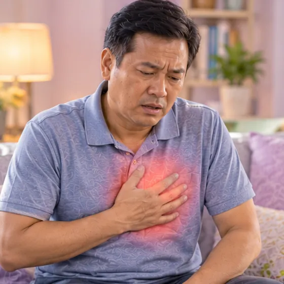

Breathlessness or wheezing
Hard or noisy breathing; feeling short of breath or a whistling sound when breathing out
What it is
Breathlessness is a feeling that you cannot get enough air. Wheezing is a high whistling sound, mostly when breathing out. Both come from narrowed airways or from the heart or lungs.
- Chest and airways
- Can happen at any age
- Short of breath or whistling
- Which doctor
- Family doctor, chest doctor (respiratory), heart doctor
- Common in
- People with asthma, allergies, lung or heart problems, smokers; after chest infections
- Contagious
- Not by itself, but a chest infection that causes it can spread
- Course
- Depends on the cause; a doctor needs to find the reason
Common signs

Short of breath on stairsExertional dyspnoea 
Wheezing breathWheeze 
Dry, tickly coughDry cough 
Tight, heavy chestChest tightness 
Wakes up short of breathNocturnal dyspnoea
Why it happens

SmokingTobacco use 
Extra body weightOverweight
Other causes
- A chest infection or a long-term lung problem
- A heart problem, where fluid can build up in the lungs
See a doctor first if
- Severe trouble breathing, cannot speak a full sentence, or blue lips: call 999
- Breathlessness with chest pain, fainting or a racing heart: call 999
- Sudden breathlessness after a long trip, surgery or with a swollen leg: go to hospital now
- Waking at night short of breath, or needing more pillows to breathe
- Fever with coughing up thick or bloody phlegm
- Breathlessness in a baby or child: see a doctor promptly
If any apply, please see a doctor before a session.
This page is general information. Please keep taking your normal medicine and keep seeing your doctor.
Keep taking your normal medicine and keep seeing your doctor. Our session is a gentle support and does not replace medical care.
Looking after yourself

Stop smokingSmoking cessation
More ways to look after yourself
- Sit upright, stay calm and breathe slowly through the nose
- Stay away from smoke, dust and strong smells
- Use your own prescribed inhaler or medicine as your doctor told you
- Keep a gentle pace in daily activity and rest when you need to
Tell your therapist
- A heart condition
- High blood pressure
- Pregnancy
- Pacemaker or metal implant
- Fever or an active infection
- A severe allergy
Your therapist will go through this with you before starting.
Questions and answers
What is Breathlessness or wheezing?
Hard or noisy breathing; feeling short of breath or a whistling sound when breathing out. Breathlessness is a feeling that you cannot get enough air. Wheezing is a high whistling sound, mostly when breathing out. Both come from narrowed airways or from the heart or lungs.
What are the common signs of Breathlessness or wheezing?
Short of breath on stairs · Wheezing breath · Dry, tickly cough · Tight, heavy chest · Wakes up short of breath
Why does Breathlessness or wheezing happen?
Smoking · Extra body weight
How can I look after myself with Breathlessness or wheezing?
Stop smoking
Can an AI Body Master session help with Breathlessness or wheezing?
A session is gentle, needle-free meridian support for your wellbeing. It does not treat or cure Breathlessness or wheezing and never replaces your medicine or your doctor. Tell your therapist about it before the session starts.
Related conditions
References: General information based on public health sources such as Mayo Clinic, NHS, Cleveland Clinic and NCBI StatPearls.
Page updated: 2026-11-01